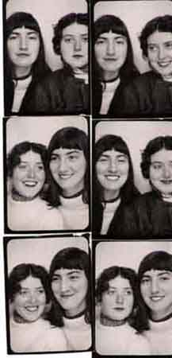

SUSAN SONTAG 1958 -- photo by Harriet Zwerling
"...one basic difference between the two was that Alfred
Chester always felt the official world was his enemy,
while Sontag felt part of it and expected its approval, its
rewards -- her famous Sense of Entitlement....It was odd
that he picked on Susan to marry, since he had always
called her a whore, but an alliance between the two
would have positioned him for the success he needed."

MARIA IRENE FORNES and
HARRIET SOHMERS
(ZWERLING)
|
JEAN GARRIGUE
"...the great love of Stanley Kunitz,
as she had been of Josephine
Herbst....She had a marvelous
independent spirit, something like
the free-living Edna St. Vincent
Millay."
|
JAMES BALDWIN in Paris (photo by Leslie Schenk
"Jimmy supported himself God-knows-how. When he was really
broke, he told me he wrote to Marlon brando. He said they had
met in the men's room at the New School in the Village...."